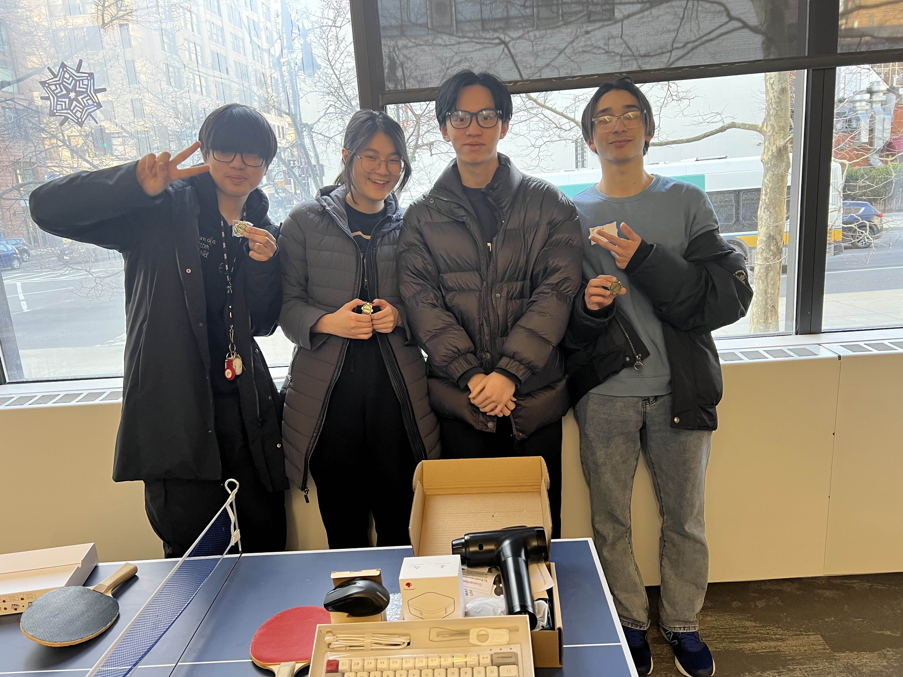

About

I'm a CS and Physics student at Northeastern, graduating 2027. I build GPU kernels, break things at hackathons, and occasionally publish papers about it.
Interests
GPU/TPU kernel engineering, compiler design, quantum computing, competitive Pokemon, reading, and hackathons.
Press

Khoury College of Computer Sciences
Started Coding on a Decades-Old Computer. Now He’s a 2025 Top 50 Hacker.

Khoury College of Computer Sciences
Khoury Undergrads Win Three Categories at Prestigious MIT Hackathon
Currently Learning
- Sparsity in NVIDIA architectures for accelerating inference
- JAX, Pallas, and TPU kernel optimization
- To relax and take a break